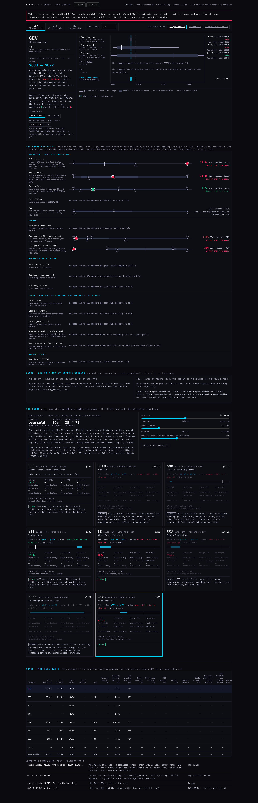
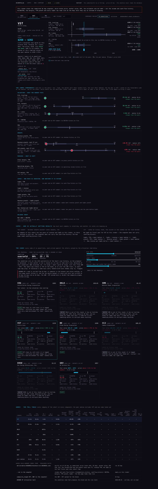
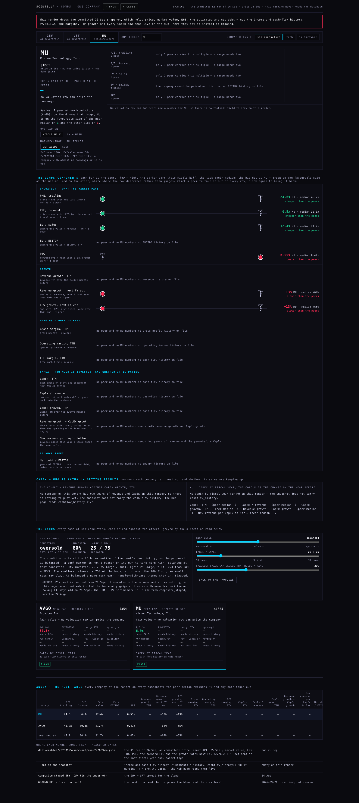
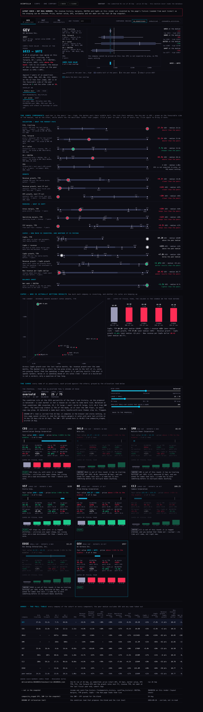


You said round 1 went too far: a football field is the ranges of valuation methods, and where they overlap is a fair value; here it should be only the pieces of the comps analysis, for one company, before anything is aggregated. You also asked for CapEx to be in it, for the summary to come first and the table to sit as an annex, for richer cards, for the greying to be proposed by the allocation read with dials rather than a button, and for the page to look like the Hub.
The working page is deliverables/20260927/comps-single/index.html (open it with ?t=GEV, ?t=VST, ?t=MU, or any ticker). Nothing is deployed and nothing was written to the database.
Read this first. I could not read the database from this machine. The permission to read the Hub's key into a script was refused and I did not try another way round. So every picture below is drawn from the committed K1 run of 26 Sep (run-20260926.json), which holds price, market value, EPS, the estimates and net debt, but not the income and cash-flow history. On the Hub, the page reads those tables live. On this machine it never tries. The CapEx pictures were checked with invented numbers, marked as such on the page and in the file names. The live page has not been seen by anyone yet. The first look after deploy is the real test.
What the page shows, top to bottom
The fair value, first. On the left: the company, today's price, and the comps fair value. That is the range of prices where most of the valuation rows agree, how many of them agree, and whether the price sits below, inside or above it. On the right: the football field in dollars per share. There is one bar per valuation row (P/E trailing, P/E forward, EV/sales, EV/EBITDA, PEG). Each bar is the price this company would carry if the market paid it the peers' multiples. The thin line runs from the lowest peer to the highest. The block is the middle half of the peers. The tick is the peer median. The dashed line is today's price. The shaded column, and the cyan bar at the foot, is where the most bars overlap.
The comps components. Every piece of the analysis is one row: the five valuation rows, then growth (revenue TTM, revenue next year, EPS next year), margins (gross, operating, free cash flow), CapEx, and net debt / EBITDA. Each row shows the peers' low–high, their middle half, their median, every peer as a small dot with its ticker, and this company as the big dot. The big dot is green where it is on the favourable side of the median, red where it is not, and white where the row only describes (how big CapEx is is not good or bad). Click a peer to take it out of every row; click again to bring it back.
CapEx: who is actually getting results. On the left, every company of the cohort placed by how fast its CapEx grew (across) against how fast its revenue grew (up), over the same twelve months. Above the dashed line, sales are growing faster than the spending. On the right, this company's CapEx by fiscal year, each bar coloured by the change on the year before, with CapEx as a share of revenue under it.
The cards (card v2) for every name of the cohort, eight on AI POWERTRAIN. Each card prices its company against the other seven and carries:
the fair-value band against the price;
eight numbers in the same place on every card, each against the peer median: forward P/E, EV/EBITDA, revenue growth TTM, operating margin, FCF margin, CapEx / revenue, revenue growth − CapEx growth, and net debt / EBITDA;
the CapEx trend by fiscal year;
whether the name plays or is greyed, in one sentence.
Above the cards: the allocation proposal and its three dials.
The annex, at the foot: the full table, with every company on every component, the peer median, and where each number comes from with its date.
The read on the 26 Sep snapshot
company
price
comps fair value
agree
price sits
favourable side of the median
GEV
$957
$833 – $872
3 of 3
above, −11% to the middle
1 of 5 rows
VST
$139
$268 – $282
3 of 4
below, +98% to the middle
4 of 6 rows
MU
$1,085
—
—
no read
3 of 6 rows
In words:
GEV. Against its seven AI POWERTRAIN peers, GEV is priced above what the peers' multiples would give it: 27.5x trailing earnings against a peer median of 24.5x, and 31.2x forward against 21.8x. EV/sales is the only row where it is cheaper (7.7x against 13.9x).
VST. VST is the opposite: 16.4x forward against a median of 31.2x. Three rows agree it would be worth about twice its price at the peers' multiples. The fourth, trailing P/E, says only $158, and it is the row left out of the overlap.
MU. MU gets no read on this render, because the snapshot holds only one other semiconductor name (AVGO), and a range needs two. On the Hub, the page reads the whole SEMICONDUCTORS cohort.
Treat these as a demonstration of the frame, not a verdict. The peer set is the next thing to decide (see what could be wrong).

GEV at 1680 wide, real browser (headless), on the committed snapshot. Visible in the shot:
the fair value $833–$872 in cyan, with "above the band" in red;
three valuation bars (P/E trailing, P/E forward, EV/sales) and two rows that say why they cannot price GEV: EV/EBITDA has no EBITDA history on this render, and PEG is out because GEV's EPS is expected to fall 20%;
the component field with peers and GEV's dot;
the history rows saying "no … history on file" instead of drawing;
the eight cards, three of them greyed;
the annex table at the foot.

VST: four valuation bars, fair value $268–$282, price $139 below the band.

MU on the snapshot: every valuation row says "only 1 peer carries this multiple — a range needs two", and no field is drawn. This is honest, not broken, but it means MU has not been seen with its real cohort.

LAYOUT CHECK: THE HISTORY NUMBERS HERE ARE INVENTED. A red banner on the page says so. They exist only to check the drawing of the CapEx scatter, the CapEx bars, the margin rows and the full cards. Price, market value, EPS, estimates and net debt are still the real snapshot. The page's ?fixture=layout switch works only on this machine.

GEV at 390 wide (phone). One column, fair value first, each bar with its numbers under it. No sideways scrolling: the page width is 390, measured. Only the annex table scrolls sideways, inside its own box.
Where each number comes from
number
how it is made
table
price
today's quote
chart API /quotes (fallback: fundamentals.price)
shares, market value
market value ÷ the price on the same row, so both are measured on one day; × today's price
fundamentals
net debt
the newest balance date on file
balance_history
EV
market value today + net debt
—
P/E trailing
price ÷ EPS TTM
fundamentals.eps_ttm
P/E forward, PEG, growth next FY
analysts' EPS and revenue for this fiscal year and the next; PEG = forward P/E ÷ EPS growth in %
the newest four consecutive quarters; the year before is the four before those; with fewer quarters, the last two fiscal years, and the annex says which
fundamentals_history (Q1–Q4, FY)
CapEx, operating and free cash flow
the same TTM rule; CapEx is stored as a negative cash flow and read as the size of the spend
cashflow_history (Q1–Q4, FY)
new revenue per CapEx dollar
revenue added this year ÷ CapEx spent the year before
both of the above
the IWM − SPY spread
geiger IWM − geiger SPY
composite_staged tf=D
the condition read
carried from GROUND UP, 26 Sep
none (see below)
CapEx is already stored.cashflow_history has columns capex, operating_cf and free_cf, by fiscal year and by quarter. The Hub's company page already reads it (the Financials tab), and so does the fundamentals DCF. It is filled from FMP's /stable/cash-flow-statement (annual and quarter, field capitalExpenditure) by the fmp-fundamentals function and the scintilla_fundamentals_pull job. No new table or FMP call is needed. Not verified: how many of the AI POWERTRAIN names actually have rows in it. The DCF page does print "no cashflow_history rows for this ticker" for some names.
How the implied value and the overlap are worked
Implied value per share at a peer multiple.
P/E: multiple × EPS.
EV rows: (multiple × sales or EBITDA − net debt) ÷ shares.
PEG: multiple × EPS growth × forward EPS.
Priced at its own multiple, every row gives back today's price; a test checks that. Below zero shows as zero.
Peers are the other names of the cohort. The company, funds and any name you take out take no part. A peer with no number on a row (a loss-maker has no P/E) sits that row out, and the row names it.
Not meaningful (NM). A peer at over 100x earnings, 50x sales, 100x EBITDA or a PEG of 10 is set aside and named on the row: BE at 382x, CCJ at 108x trailing, OKLO at 6,971x sales, SMR at 264x. Without this rule, GEV's band was $1,148–$2,181, pulled up by companies with almost no earnings yet. The rule is a switch on the page (SET ASIDE / KEEP).
The overlap. The page uses each bar's middle half by default. You can switch it to the full low–high: for GEV that gives $814–$892. When every bar overlaps, the band is where they all overlap. When they split, it is the stretch covered by the most bars, and the page says how many of how many agree. When stretches tie, the one holding the median of the bars' midpoints wins.
The CapEx "results" number = revenue growth − CapEx growth, in points. Above zero, sales are growing faster than the spending. The page says so plainly: in a build-out, spending ahead of sales is a question of how long, not a verdict.
The greying, proposed by the allocation read
The allocation tool's GROUND UP tab reads the market's condition as a percentile of its own heat history. It turns that into % invested (your Cockpit grid A) and a large-cap share (grid B, tilted by IWM − SPY). This page copies those two grids unchanged. A test pins the copy to what GROUND UP printed on 26 Sep: 80% invested and 25 / 75 at balanced, and 100% and 15 / 85 at aggressive. The same read now proposes three things:
Risk level. Balanced when the market is at neutral or cooler, easing to conservative as it gets stretched. That is "risk-averse in risky moments". A washed-out market does not propose aggressive on its own; that step is yours, on the dial. On 26 Sep the heat was at the 25th percentile (oversold), so the proposal is balanced.
Large / small blend: 25 / 75, from your grid B.
The greying.
A small-cap sleeve under 20% of the book is too thin to hold a name, so small caps grey. At 75%, they may play.
At balanced a name must earn, so OKLO, SMR and EOSE grey.
CCJ greys on your own "uranium: not right now".
CEG and VST play with the utilities care note.
Three dials adjust it: risk level (continuous, conservative to aggressive), the large / small blend, and the smallest small-cap sleeve that holds a name, plus BACK TO THE PROPOSAL. The effects, checked in a real browser:
At aggressive, the loss-makers play and CCJ stays out on the uranium rule.
At conservative, CEG and VST grey, because utilities are handle-with-care.
Your round‑1 rules (the $10B floor reason, uranium out, utilities with care) are read from this browser if you saved them, and never rewritten.
GROUND UP computes in the browser and stores nothing, so the Hub cannot re-read it. The page carries the 26 Sep read as a dated input and says so. And GROUND UP's own deliverable says the ten equity geigers it votes with were last written on 24 Aug, 33 days old on 26 Sep. The condition under this proposal is a month stale.
What could be wrong
The peer set is a theme, not a peer group. AI POWERTRAIN puts a turbine maker (GEV) next to two power producers (CEG, VST), a uranium miner (CCJ), fuel cells (BE), pre-revenue reactors (OKLO, SMR) and batteries (EOSE). With the NM rule on, GEV's trailing P/E rests on two peers (CEG, VST), and taking CEG out moves GEV's band from $833–$872 to $1,431–$1,486. A comps read is only as good as its peers. The page shows how many peers every row rests on, so thin rows are visible.
The live page has not been seen. The history tables (fundamentals_history, cashflow_history, balance_history of every period) are read with the same queries the Hub's company page uses. Their coverage for these eight names and for SEMICONDUCTORS is unverified. If a quarter is missing, TTM falls back to fiscal years and the annex says so.
Snapshot shortcuts. On this machine the snapshot holds growth rates, not the estimates themselves, so the page rebuilds the ratio on a base of 100. The fundamentals-row price is rebuilt as P/E × EPS; for loss-makers the quote price stands in. Both apply only here, not on the Hub.
The thresholds are mine. The NM caps, the middle half for the overlap, the 20% small-sleeve floor, and the risk-by-condition curve are defaults on dials, not findings.
What I did not do
I did not read the database, push, deploy, or write any table.
I did not see the live page.
I did not check MU against its real cohort.
I did not wire anything into the board or the K1 workshop. K1's files are byte-identical; this page imports K1's number helpers and fit rules and does not change them.
I did not change the allocation repo. Its grids are copied, with the source SHA (574dbbe) in the file.
Aggregation, proposed and not built
Once the one-company frame is agreed, aggregation is these five things, in this order:
One line per company, in percent of its own price. Each company's fair-value band is redrawn relative to its price (price = 0). GEV then reads −13% to −9% and VST +93% to +103%. Every name shares one axis, sorted by the distance to the middle of its band. This is the cross-company football field.
Only rows that earn it. A row enters the aggregate only with at least three peers and no NM, and each line shows its agreement count ("3 of 4 rows"). A band resting on one row is drawn hollow.
The CapEx quadrant for the book. The same scatter as the page, across every cohort you hold: who is spending and getting sales, who is spending ahead of sales, who is not spending.
Peer groups before cohorts. A saved peer list per company, drawn first from its cohort and edited by you. This would be one additive table. Aggregating over theme cohorts would add their mix to every comparison.
Into the knockout. "Distance to the band" and "results" replace the round‑robin's raw metric wins in round 2. The allocation greying stays as it is now: proposed by the condition, adjusted on the dials.
Tests
tests/comps-single.test.mjs has 35 tests. They cover:
percentiles and peer bands;
TTM and its fall-backs;
every component worked by hand on a test company;
loss-makers;
implied value on each row, and the "own multiple gives back the price" check;
the overlap: all agree, split, tie, no overlap, touching ends;
price below, inside and above the band;
peers taken out, and NM;
the GROUND UP grid copy, the risk curve, and the greying through K1's fit rules;
the page itself: no key in the file, snapshot-only on this machine, K1's saved rules never written, the Hub tokens, and no text under 10px.
The full suite result against the baseline is in the run's return note.